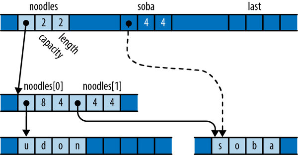
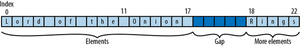

Chapter 23. Unsafe Code
Let no one think of me that I am humble or weak or passive;
Let them understand I am of a different kind:
dangerous to my enemies, loyal to my friends.
To such a life glory belongs.Euripides, Medea
The secret joy of systems programming is that, underneath every single safe language and carefully designed abstraction is a swirling maelstrom of wildly unsafe machine language and bit fiddling. You can write that in Rust, too.
The language we’ve presented up to this point in the book ensures your programs are free of memory errors and data races entirely automatically, through types, lifetimes, bounds checks, and so on. But this sort of automated reasoning has its limits; there are many valuable techniques that Rust cannot recognize as safe.
Unsafe code lets you tell Rust, “I am opting to use features whose safety you cannot guarantee.” By marking off a block of code as unsafe, you acquire the ability to call unsafe functions in the standard library, dereference raw pointers, and call functions written in other languages like C and C++, among other powers. Rust’s other safety checks still apply: type checks, lifetime checks, and bounds checks on indices all occur normally. Unsafe code just enables a small set of additional features.
This ability to step outside the boundaries of safe Rust is what makes it possible to implement many of Rust’s most fundamental features in Rust itself, just as C and C++ are used to implement their own standard libraries. Unsafe code is what allows the Vec type to manage its buffer efficiently; the std::io module to talk to the operating system; and the std::thread and std::sync modules to provide concurrency primitives.
This chapter covers the essentials of working with unsafe features:
-
Intentionally skip consistency and bounds checks when you know they’re unnecessary and hurting performance by calling unsafe functions like
from_utf8_unchecked. -
Bypass the type system to do things like reinterpreting a
&[u8]as a&[u32]. -
Write your own memory management and concurrency primitives, like
VecandArc, without relying on Rust’s standard library. -
Use advanced, CPU-specific instructions, compiler intrinsics, and other features the compiler can’t prove are safe.
-
Wrap your unsafe code in a safe API that ensures end users—and your future self—can take advantage of the benefits of your work without violating Rust’s safety guarantees.
Unsafe from What?
At the start of this book, we showed a C program that crashes in a surprising way because it fails to follow one of the rules prescribed by the C standard. A similar program can be written in Rust:
fnmain(){letmuta:usize=0;letptr=&rawmuta;unsafe{*ptr.add(4)=0x7ffff7d48a38;}}
Running this program results in similarly surprising results:
$cargobuildCompiling unsafe-samples v0.1.0Finished debug [unoptimized + debuginfo] target(s) in 0.44s$../../target/debug/crashcrash: Error: .netrc file is readable by others.crash: Remove password or make file unreadable by others.Segmentation fault (core dumped)$
This program uses the &raw mut operator to get a raw pointer of type *mut usize pointing to the local variable a, then uses the add method to produce a pointer four words further along in memory. This happens to be where main’s return address is stored. The program overwrites the return address with a constant, such that returning from main behaves in a surprising way. What makes this crash possible is the program’s incorrect use of unsafe features—in this case, the ability to dereference raw pointers.
An unsafe feature is one that imposes a contract: rules that Rust cannot enforce automatically, but which you must nonetheless follow to avoid undefined behavior.
A contract goes beyond the usual type checks and lifetime checks, imposing further rules specific to that unsafe feature. Typically, Rust itself doesn’t know about the contract at all; it’s just explained in the feature’s documentation. For example, the raw pointer type has a contract forbidding you to dereference a pointer that has been advanced beyond the end of its original referent. The expression *ptr.add(3) = ... in this example breaks this contract. But, as the transcript shows, Rust compiles the program without complaint: its safety checks do not detect this violation. When you use unsafe features, you, as the programmer, bear the responsibility for checking that your code adheres to their contracts.
Lots of features have rules you should follow to use them correctly, but such rules are not contracts in the sense we mean here unless the possible consequences include undefined behavior. Undefined behavior is behavior Rust assumes will never happen, like overwriting a function call’s return address with something else. Code that passes Rust’s usual safety checks and complies with the contracts of the unsafe features it uses cannot possibly do such a thing. Since the program violates the raw pointer contract, its behavior is undefined, and it goes off the rails.
If your code exhibits undefined behavior, you have broken your half of your bargain with Rust, and Rust declines to predict the consequences. Dredging up irrelevant error messages from the depths of system libraries and crashing is one possible consequence; handing control of your computer over to an attacker is another. The effects could vary from one release of Rust to the next, without warning. Sometimes, however, undefined behavior has no visible consequences. For example, if the main function never returned (if, perhaps, it called std::process::exit to terminate the program early), then the corrupted return address probably wouldn’t matter.
You may only use unsafe features within an unsafe block or an unsafe function; we’ll explain both in the sections that follow. This makes it harder to use unsafe features unknowingly: by forcing you to write an unsafe block or function, Rust makes sure you have acknowledged that your code may have additional rules to follow.
unsafe Blocks
An unsafe block looks just like an ordinary Rust block preceded by the unsafe keyword, with the difference that you can use unsafe features in the block:
unsafe{String::from_utf8_unchecked(ascii)}
Without the unsafe keyword in front of the block, Rust would object to the use of from_utf8_unchecked, which is an unsafe function. Blocks marked with unsafe segregate code that requires extra scrutiny due to its ability to cause undefined behavior from the rest of the program. Small amounts of unsafe code can be wrapped in safe interfaces which enable their use without fearing undefined behavior, at a reduced cost in time and effort compared to simply using unsafe everywhere.
Like an ordinary Rust block, the value of an unsafe block is that of its final expression, or () if it doesn’t have one. The call to String::from_utf8_unchecked in this example provides the value of the block.
An unsafe block unlocks five additional options for you:
-
You can call
unsafefunctions. Eachunsafefunction must specify its own contract, depending on its purpose. -
You can dereference raw pointers. Safe code can pass raw pointers around, compare them, and create them by conversion from references (or even from integers), but only unsafe code can actually use them to access memory. We’ll cover raw pointers in detail and explain how to use them safely in “Raw Pointers”.
-
You can access the fields of
unions, which are unsafe because, unlikeenums, the compiler can’t be sure they contain valid bit patterns for their respective types. -
You can access mutable
staticvariables. As explained in “Global Variables”, Rust can’t be sure when threads are using mutablestaticvariables, so their contract requires you to ensure all access is properly synchronized. -
You can access functions and variables declared through Rust’s foreign function interface. These are considered
unsafeeven when immutable, since they are visible to code written in other languages that may not respect Rust’s safety rules.
Restricting unsafe features to unsafe blocks doesn’t really prevent you from doing whatever you want. It’s perfectly possible to just stick an unsafe block into your code and move on. The benefit of the rule lies mainly in drawing human attention to code whose safety Rust can’t guarantee:
-
You won’t accidentally use unsafe features and then discover you were responsible for contracts you didn’t even know existed.
-
An
unsafeblock attracts more attention from reviewers. Some projects even have automation to ensure this, flagging code changes that affectunsafeblocks for special attention. -
When you’re considering writing an
unsafeblock, you can take a moment to ask yourself whether your task really requires such measures. If it’s for performance, do you have measurements to show that this is actually a bottleneck? Perhaps there is a good way to accomplish the same thing in safe Rust.
Example: An Efficient ASCII String Type
Here’s the definition of Ascii, a string type that ensures its contents are always valid ASCII. This type uses an unsafe feature to provide zero-cost conversion into String:
modmy_ascii{/// An ASCII-encoded string.#[derive(Debug, Eq, PartialEq)]pubstructAscii(// This must hold only well-formed ASCII text:// bytes from `0` to `0x7f`.Vec<u8>,);implAscii{/// Creates an `Ascii` from the ASCII text in `bytes`. Returns a/// `NotAsciiError` error if `bytes` contains any non-ASCII/// characters.pubfnfrom_bytes(bytes:Vec<u8>)->Result<Ascii,NotAsciiError>{ifbytes.iter().any(|&byte|!byte.is_ascii()){returnErr(NotAsciiError(bytes));}Ok(Ascii(bytes))}}// When conversion fails, we give back the vector we couldn't convert.// This should implement `std::error::Error`; omitted for brevity.#[derive(Debug, Eq, PartialEq)]pubstructNotAsciiError(pubVec<u8>);// Safe, efficient conversion, implemented using unsafe code.implFrom<Ascii>forString{fnfrom(ascii:Ascii)->String{// SAFETY: This module enforces the invariant that `ascii.0`// is ASCII, and all ASCII text is well-formed UTF-8.unsafe{String::from_utf8_unchecked(ascii.0)}}}...}
The key to this module is the definition of the Ascii type. The type itself is marked pub, to make it visible outside the my_ascii module. But the type’s Vec<u8> element is not public, so only the my_ascii module can construct an Ascii value or refer to its element. This leaves the module’s code in complete control over what may or may not appear there. As long as the public constructors and methods ensure that freshly created Ascii values are well-formed and remain so throughout their lives, then the rest of the program cannot violate that rule. And indeed, the public constructor Ascii::from_bytes carefully checks the vector it’s given before agreeing to construct an Ascii from it. For brevity’s sake, we don’t show any methods, but you can imagine a set of text-handling methods that ensure Ascii values always contain proper ASCII text, just as a String’s methods ensure that its contents remain well-formed UTF-8.
This arrangement lets us implement From<Ascii> for String very efficiently. The unsafe function String::from_utf8_unchecked takes a byte vector and builds a String from it without checking whether its contents are well-formed UTF-8 text; the function’s contract holds its caller responsible for that. Fortunately, the rules enforced by the Ascii type are exactly what we need to satisfy from_utf8_unchecked’s contract. As we explained in “UTF-8”, any block of ASCII text is also well-formed UTF-8, so an Ascii’s underlying Vec<u8> is immediately ready to serve as a String’s buffer.
Nonetheless, we have marked the unsafe block in the from method with a // SAFETY: comment, as is customary, explaining why we think that particular use of unsafe code is correct.
With the preceding definitions in place, we can take our Ascii string type for a spin:
usemy_ascii::Ascii;letbytes:Vec<u8>=b"ASCII and ye shall receive".to_vec();// This call entails no allocation or text copies, just a scan.letascii:Ascii=Ascii::from_bytes(bytes).unwrap();// We know these chosen bytes are ok.// This call is zero-cost: no allocation, copies, or scans.letstring=String::from(ascii);assert_eq!(string,"ASCII and ye shall receive");
No unsafe blocks are required to use Ascii. We have implemented a safe interface using unsafe operations and arranged to meet their contracts depending only on the module’s own code, not on its users’ behavior.
An Ascii is nothing more than a wrapper around a Vec<u8>, hidden inside a module that enforces extra rules about its contents. A type of this sort is called a newtype, a common pattern in Rust. Rust’s own String type is defined in exactly the same way, except that its contents are restricted to be UTF-8, not ASCII. In fact, here’s the definition of String from the standard library:
pubstructString{vec:Vec<u8>,}
This pattern, in which unsafe operations are wrapped in safe interfaces, is the mechanism that enables most Rust programs to avoid unsafe entirely while still allocating memory, interacting with filesystem APIs, and so forth. It is typically very efficient; at the machine level, with Rust’s types out of the picture, a newtype and its element have identical representations in memory, so constructing a newtype doesn’t require any machine instructions at all. In Ascii::from_bytes, the expression Ascii(bytes) simply deems the Vec<u8>’s representation to now hold an Ascii value. Similarly, String::from_utf8_unchecked probably requires no machine instructions when inlined: the Vec<u8> is now considered to be a String.
Unsafe Functions
An unsafe function definition looks like an ordinary function definition preceded by the unsafe keyword.
Marking a function unsafe warns its callers that the function has a contract they must satisfy to avoid undefined behavior. You may call unsafe functions only within unsafe blocks.
For example, here’s a new constructor for the Ascii type we introduced before that builds an Ascii from a byte vector without checking if its contents are valid ASCII:
// This must be placed inside the `my_ascii` module.implAscii{/// Constructs an `Ascii` value from `bytes`, without checking/// whether `bytes` actually contains well-formed ASCII.////// This constructor is infallible, and returns an `Ascii` directly,/// rather than a `Result<Ascii, NotAsciiError>` as the `from_bytes`/// constructor does.////// # Safety////// The caller must ensure that `bytes` contains only ASCII/// characters: bytes no greater than 0x7f. Otherwise, the effect is/// undefined.pubunsafefnfrom_bytes_unchecked(bytes:Vec<u8>)->Ascii{Ascii(bytes)}}
Presumably, code calling Ascii::from_bytes_unchecked already knows somehow that the vector in hand contains only ASCII characters, so the check that Ascii::from_bytes insists on carrying out would be a waste of time, and the caller would have to write code to handle Err results that it knows will never occur. Ascii::from_bytes_unchecked lets such a caller sidestep the checks and the error handling.
But earlier we emphasized the importance of Ascii’s public constructors and methods ensuring that Ascii values are well-formed. Doesn’t from_bytes_unchecked fail to meet that responsibility?
Not quite: from_bytes_unchecked meets its obligations by passing them on to its caller via its contract. The presence of this contract is what makes it correct to mark this function unsafe: despite the fact that the function itself carries out no unsafe operations, its callers must follow rules Rust cannot enforce automatically to avoid undefined behavior.
Can you really cause undefined behavior by breaking the contract of Ascii::from_bytes_unchecked? Yes. You can construct a String holding ill-formed UTF-8 as follows:
// Imagine that this vector is the result of some complicated process// that we expected to produce ASCII. Something went wrong!letbytes=vec![0xf7,0xbf,0xbf,0xbf];letascii=unsafe{// This unsafe function's contract is violated// when `bytes` holds non-ASCII bytes.Ascii::from_bytes_unchecked(bytes)};letbogus:String=ascii.into();// `bogus` now holds ill-formed UTF-8. Parsing its first character produces// a `char` that is not a valid Unicode code point. That's undefined// behavior, so the language doesn't say how this assertion should behave.assert_eq!(bogus.chars().next().unwrap()asu32,0x1fffff);
As it happens, the standard library’s chars iterator contains a debug-only check that detects the undefined behavior and aborts the process:
thread 'bad_ascii' panicked at rust/library/core/src/char/methods.rs:239:18:unsafe precondition(s) violated: invalid value for `char`This indicates a bug in the program. This Undefined Behavior check is optional,and cannot be relied on for safety.thread caused non-unwinding panic. aborting.
Checks like this one are disabled in release builds, for performance, and some kinds of undefined behavior are not subject to run-time checking at all. In those cases the consequences are truly unpredictable. In one version of Rust, this example produced the following entertaining error message:
thread 'main' panicked at 'assertion failed: `(left == right)`left: `2097151`,right: `2097151`', src/main.rs:42:5
Those two numbers seem equal to us, but this is not Rust’s fault; it’s the fault of the previous unsafe block. When we say that undefined behavior leads to unpredictable results, this is the kind of thing we mean.
This illustrates two critical facts about bugs and unsafe code:
-
Bugs that occur before the
unsafeblock can break contracts. Whether anunsafeblock causes undefined behavior can depend not just on the code in the block itself, but also on the code that supplies the values it operates on. Everything that yourunsafecode relies on to satisfy contracts is safety-critical. The conversion fromAsciitoStringbased onString::from_utf8_uncheckedis well-defined only if the rest of the module properly maintainsAscii’s invariants. -
The consequences of breaking a contract may appear after you leave the
unsafeblock. The undefined behavior courted by failing to comply with an unsafe feature’s contract often does not occur within theunsafeblock itself. Constructing a bogusStringas shown before may not cause problems until much later in the program’s execution.
Essentially, Rust’s type checker, borrow checker, and other static checks are inspecting your program and trying to construct proof that it cannot exhibit undefined behavior. When Rust compiles your program successfully, that means it succeeded in proving your code sound. An unsafe block is a gap in this proof: “This code,” you are saying to Rust, “is fine, trust me.” Whether your claim is true could depend on any part of the program that influences what happens in the unsafe block, and the consequences of being wrong could appear anywhere influenced by the unsafe block. Writing the unsafe keyword amounts to a reminder that you are not getting the full benefit of the language’s safety checks.
Given the choice, you should naturally prefer to create safe interfaces, without contracts. These are much easier to work with, since users can count on Rust’s safety checks to ensure their code is free of undefined behavior. Even if your implementation uses unsafe features, it’s best to use Rust’s types, lifetimes, and module system to meet their contracts while using only what you can guarantee yourself, rather than passing responsibilities on to your callers.
Unfortunately, it’s not unusual to come across unsafe functions in the wild whose documentation does not bother to explain their contracts. You are expected to infer the rules yourself, based on your experience and knowledge of how the code behaves. If you’ve ever uneasily wondered whether what you’re doing with a C or C++ API is OK, then you know what that’s like.
Marking Unsafe Code
On most topics, the Rust compiler is happy to offer guidance, but on the subject of whether a function should be marked unsafe, Rust is silent. You can usually delete the unsafe from an unsafe fn without so much as a warning. When using unsafe code, it’s up to you to categorize functions correctly:
-
If it’s possible to misuse the function in a way that compiles fine but still causes undefined behavior, you must mark it as unsafe. The rules for using the function correctly are its contract; the existence of a contract is what makes the function unsafe.
-
Otherwise, the function is safe: no well-typed call to it can cause undefined behavior. It should not be marked
unsafe.
Whether the function uses unsafe features in its body is irrelevant; what matters is the presence of a contract. Before, we showed an unsafe function that uses no unsafe features, and a safe function that does use unsafe features.
Marking a function unsafe means you’re providing a dangerous tool. It should come with a # Safety section in the documentation, explaining how to use it correctly. An unsafe block means you’re using dangerous tools, ideally with a // SAFETY: comment explaining why your usage is correct. These are two different messages. Sometimes both messages (and both kinds of comment) are appropriate, so even in an unsafe fn, it makes sense to wrap unsafe code in an unsafe block. Rust warns if you don’t. You can upgrade the warning to an error with #![deny(unsafe_op_in_unsafe_fn)] in your crate root.
Undefined Behavior
In the introduction, we said that the term undefined behavior refers to behavior that Rust assumes will never happen. Of course, we know from our experience with other languages that this kind of behavior happens all the time, by accident. The compiler’s authors are not naïve to this fact, but choosing to draw boundaries around what the compiler expects to happen allows it to produce much more efficient code.
A compiler is a translator from one programming language to another. The Rust compiler takes a Rust program and translates it into an equivalent machine language program; that is, one which has the same visible behavior when executed, makes the same system calls, interacts with foreign libraries in equivalent ways, and so on. It’s a bit like a Turing test for programs: if you can’t tell whether you’re interacting with the original or the translation, then they’re equivalent.
Optimizing compilers, like rustc, do their work by incrementally transforming your code. At every step, the compiler is trying to change the program behavior in good ways (making it run faster or use less memory) but not in bad ways (introducing bugs).
Let’s look at an example of what happens when this process goes wrong. Consider the following code:
leti=10;very_trustworthy(&i);println!("{}",i*100);
Even knowing nothing about the definition of very_trustworthy, we can see that it receives only a shared reference to i, so the call cannot change i’s value. Since the value passed to println! will always be 1000, Rust can translate this code into machine language as if we had written:
very_trustworthy(&10);println!("{}",1000);
This transformed version has the same visible behavior as the original, and it’s probably a bit faster. But it makes sense to consider the performance of this version only if we agree it has the same meaning as the original. What if very_trustworthy were defined as follows?
// This function takes a non-mut reference...fnvery_trustworthy(shared:&i32){unsafe{// ... and breaks the rules by turning it into a mut reference// via pointers. This is undefined behavior.letmutable=sharedas*consti32as*muti32;*mutable=20;}}
This code breaks the rules for shared references: it changes the value of i to 20, even though it should be frozen because i is borrowed for sharing. As it happens, Rust is smart enough to catch this particular ill-conceived hack, and by default, refuses to compile it. But Rust can’t detect all rule-breaking in unsafe code. What would happen if Rust couldn’t detect the problem here, and it simply compiled the code as usual? The transformation we made to the caller would have a very visible effect: if Rust transformed the code, the program would print 1000; if it left the code alone and used the new value of i, it would print 2000. Breaking the rules for shared references in very_trustworthy means that shared references won’t behave as expected in its callers.
This sort of problem arises with almost every kind of transformation Rust might attempt. Even inlining a function into its call site assumes, among other things, that when the callee finishes, control flow returns to the call site. But we opened the chapter with an example of ill-behaved code that violates even that assumption.
It’s basically impossible for Rust (or any other language) to assess whether a transformation to a program preserves its meaning unless it can trust the fundamental features of the language to behave as designed. And whether they do or not can depend not just on the code at hand, but on other, potentially distant, parts of the program. In order to do anything at all with your code, Rust must assume that the rest of your program is well-behaved.
Here, then, are Rust’s rules for well-behaved programs:
-
The program must not read uninitialized memory.
-
The program must not create invalid primitive values:
- References, boxes, or
fnpointers that arenull boolvalues that are not either a0or1enumvalues with invalid discriminant valuescharvalues that are not valid, nonsurrogate Unicode code pointsstrvalues that are not well-formed UTF-8- Fat pointers with invalid vtables/slice lengths
- Any value of the “never” type, written
!, for functions that don’t return
- References, boxes, or
-
The rules for references explained in Chapter 5 must be followed. No reference may outlive its referent; shared access is read-only access; and mutable access is exclusive access.
-
The program must not dereference null, incorrectly aligned, or dangling pointers.
-
The program must not use a pointer to access memory outside the allocation with which the pointer is associated. We will explain this rule in detail in “Dereferencing Raw Pointers Safely”.
-
The program must be free of data races. A data race occurs when two threads access the same memory location without synchronization, and at least one of the accesses is a write.
-
The program must not unwind across a call made from another language, via the foreign function interface, as explained in “Unwinding”.
-
If the program uses any
unsafestandard library features, it must comply with their contracts.
Any violation of these rules constitutes undefined behavior and renders Rust’s efforts to optimize your program and translate it into machine language untrustworthy. If you break the last rule and pass ill-formed UTF-8 to String::from_utf8_unchecked, perhaps 2097151 is not so equal to 2097151 after all.
In safe Rust code, the compiler enforces all of these rules. If your program compiles, you’re in good shape. Only when you use unsafe features do the rules become your responsibility.
In C and C++, the fact that your program compiles without errors or warnings means much less; as we mentioned in the introduction to this book, even the best C and C++ programs written by well-respected projects that hold their code to high standards exhibit undefined behavior in practice.
Unsafe Traits
An unsafe trait is a trait that has a contract Rust cannot check or enforce that implementers must satisfy to avoid undefined behavior. To implement an unsafe trait, you must mark the implementation as unsafe. It is up to you to understand the trait’s contract and make sure your type satisfies it.
std::marker::Send and std::marker::Sync are the classic examples of unsafe traits. These traits don’t define any methods, so they’re trivial to implement for any type you like. But they do have contracts: Send requires implementers to be safe to move to another thread, and Sync requires them to be safe to share among threads via shared references. Implementing Send for an inappropriate type, for example, would make std::sync::Mutex no longer safe from data races.
The bytemuck crate provides some additional capabilities for “plain old data” types - that is, types for which there aren’t complex initialization and validity requirements. It does this partly through a trait called Zeroable, for types that can be safely initialized by setting all their bytes to zero. Clearly, zeroing a usize is fine, but zeroing a &T gives you a null reference, which will cause a crash if dereferenced. For types that are Zeroable, some optimizations are possible: you can initialize an array of them quickly with the write_bytes method (Rust’s equivalent of memset) or use operating system calls that allocate zeroed pages.
Like most marker traits, implementing Zeroable doesn’t require implementing any methods:
unsafeimplZeroableforu8{}unsafeimplZeroablefori32{}unsafeimplZeroableforusize{}// and so on for all the integer types
With these definitions, we can write a function that quickly allocates a vector of a given length containing a Zeroable type:
usebytemuck::Zeroable;fnzeroed_vector<T>(len:usize)->Vec<T>whereT:Zeroable,{letmutvec=Vec::<T>::with_capacity(len);// SAFETY: Writing to the spare capacity of vec is safe. Once we've// initialized the storage with valid T values, set_len is OK.// We know zero bytes make valid values because T is Zeroable.unsafe{vec.as_mut_ptr().write_bytes(0,len);vec.set_len(len);}vec}
This function starts by creating an empty Vec with the required capacity. Then it obtains a pointer of type *mut T pointing to the unoccupied buffer, and calls the pointer’s write_bytes method to fill it with zeros. (The write_bytes method treats len as a number of T elements, not a number of bytes, so this call does fill the entire buffer.) A vector’s set_len method changes its length without doing anything to the buffer; this is unsafe, because you must ensure that the newly enclosed buffer space actually contains properly initialized values of type T. But this is exactly what the T: Zeroable bound establishes: a block of zero bytes represents a valid T value. Our use of set_len is safe.
Here, we put it to use:
letv:Vec<usize>=zeroed_vector(100_000);assert!(v.iter().all(|&u|u==0));
Clearly, Zeroable must be an unsafe trait, since an implementation that doesn’t respect its contract can lead to undefined behavior:
structHoldsRef<'a>(&'amuti32);unsafeimpl<'a>ZeroableforHoldsRef<'a>{}letmutv:Vec<HoldsRef>=zeroed_vector(1);*v[0].0=1;// crashes: dereferences null pointer
Rust has no idea what Zeroable is meant to signify, so it can’t tell when it’s being implemented for an inappropriate type. As with any other unsafe feature, it’s up to you to understand and adhere to an unsafe trait’s contract.
Note that unsafe code must not depend on ordinary, safe traits being implemented correctly. For example, suppose there were an implementation of the std::hash::Hasher trait that simply returned a random hash value, with no relation to the values being hashed. The trait requires that hashing the same bits twice must produce the same hash value, but this implementation doesn’t meet that requirement; it’s simply incorrect. But because Hasher is not an unsafe trait, unsafe code must not exhibit undefined behavior when it uses this hasher. The std::collections::HashMap type is carefully written to respect the contracts of the unsafe features it uses regardless of how the hasher behaves. Certainly, the table won’t function correctly: lookups will fail, and entries will appear and disappear at random. But the table will not exhibit undefined behavior.
Raw Pointers
A raw pointer in Rust is an unconstrained pointer. You can use raw pointers to form all sorts of structures that Rust’s checked pointer types cannot, like doubly linked lists or arbitrary graphs of objects. But because raw pointers are so flexible, Rust cannot tell whether you are using them safely or not, so you can dereference them only in an unsafe block.
Raw pointers are equivalent to C or C++ pointers, so they’re also useful for interacting with code written in those languages.
There are two kinds of raw pointers:
-
A
*mut Tis a raw pointer to aTthat permits modifying its referent. -
A
*const Tis a raw pointer to aTthat only permits reading its referent.
(There is no plain *T type; you must always specify either const or mut.)
You can create a raw pointer using &raw const or &raw mut, the pointer versions of the borrowing operators & and &mut; or by conversion from the corresponding reference type. To dereference a raw pointer, use the * operator:
letmutx=10;letptr_x=&rawmutx;// using the `&raw mut` operatorlety=Box::new(20);letptr_y:*consti32=&*y;// using conversionunsafe{*ptr_x+=*ptr_y;}assert_eq!(x,30);
No explicit conversion is needed to assign the reference &*y to the pointer variable ptr_y; just specifying the type is enough. Rust implicitly coerces references to raw pointers (but not the other way around, of course).
Unlike boxes and references, raw pointers can be null, like NULL in C or nullptr in C++:
fnoption_to_raw<T>(opt:Option<&T>)->*constT{matchopt{None=>std::ptr::null(),Some(r)=>ras*constT,}}assert!(!option_to_raw(Some(&("pea","pod"))).is_null());assert_eq!(option_to_raw::<i32>(None),std::ptr::null());
This example has no unsafe blocks: creating raw pointers, passing them around, and comparing them are all safe. Only dereferencing a raw pointer is unsafe.
A raw pointer to a dynamically sized type is a fat pointer, just as the corresponding reference or Box type would be. A *const [u8] pointer includes a length along with the address, and a *mut dyn Write includes a pointer to the vtable.
Although Rust implicitly dereferences safe pointer types in various situations, raw pointer dereferences must be explicit:
-
The
.operator will not implicitly dereference a raw pointer; you must write(*raw).fieldor(*raw).method(...). -
Raw pointers do not implement
Deref, so deref coercions do not apply to them. -
Operators like
==and<compare raw pointers as addresses: two raw pointers are equal if they point to the same location in memory. Similarly, hashing a raw pointer hashes the address it points to, not the value of its referent. -
Formatting traits like
std::fmt::Displayfollow references automatically, but don’t handle raw pointers at all. The exceptions arestd::fmt::Debugandstd::fmt::Pointer, which show raw pointers as hexadecimal addresses, without dereferencing them.
The as operator permits almost every plausible conversion from references to raw pointers or between two raw pointer types. However, you may need to break up a complex conversion into a series of simpler steps. For example:
&vec![42_u8]as*constString;// error: invalid conversion&vec![42_u8]as*constVec<u8>as*constString;// permitted
Note that the as operator doesn’t work in the other direction, converting raw pointers to references. Such conversions would be unsafe, and as is a safe operation. Instead, you must dereference the raw pointer (in an unsafe block) and then borrow the resulting value. This makes it clear where the reference is being borrowed.
Be very careful when you do this: a reference produced this way has an unconstrained lifetime: there’s no limit on how long it can live, since the raw pointer gives Rust nothing to base such a decision on. In “A Safe Interface to libgit2”, we show several examples of how to properly constrain lifetimes.
Many types have as_ptr and as_mut_ptr methods that return a raw pointer to their contents. For example, array slices and strings return pointers to their first elements. Owning pointer types like Box, Rc, and Arc have into_raw and from_raw functions that convert to and from raw pointers. Some of these methods’ contracts impose surprising requirements, so check their documentation before using them.
You can also construct raw pointers by conversion from integers, although the only integers you can trust for this are generally those you got from a pointer in the first place.
Raw pointers are neither Send nor Sync. Rust assumes that types containing raw pointers are not thread-safe unless you explicitly implement Send and/or Sync, as discussed in “Unsafe Traits”.
Dereferencing Raw Pointers Safely
Here are some common-sense guidelines for using raw pointers safely:
-
Dereferencing null pointers or dangling pointers is undefined behavior.
-
Dereferencing pointers that are not properly aligned for their referent type is undefined behavior.
-
Reading uninitialized memory is always undefined behavior. Assigning to uninitialized memory,
*ptr = value, is undefined behavior too, if the type of*ptrhas a destructor! You can initialize the memory safely usingptr.write(value), as we’ll see later in this chapter. -
You may borrow values out of a dereferenced raw pointer only if doing so obeys the rules for reference safety explained in Chapter 5: no reference may outlive its referent, shared access is read-only access, and mutable access is exclusive access. (This rule is easy to violate by accident, since raw pointers are often used to create data structures with nonstandard sharing or ownership.)
-
You may use a raw pointer’s referent only if it is a well-formed value of its type. For example, you must ensure that dereferencing a
*const charyields a proper, nonsurrogate Unicode code point. -
If you assign to a raw pointer’s referent, you must not violate the invariants of any type of which the referent is a part. For example, if you have a
*mut u8pointing to a byte of aString, you may only store values in thatu8that leave theStringholding well-formed UTF-8. -
A pointer’s
addandsubmethods must only be used to produce new pointers within the same variable or heap allocation, or one byte past the end. Going outside the bounds of the allocation is undefined behavior. (This is the rule we broke in the crashing example at the beginning of this chapter. We’ll discussaddin detail later and show how to use it constructively.) -
Likewise, if you do pointer arithmetic by converting a pointer to an integer, doing arithmetic on the integer, and then converting it back to a pointer, the result must point into the same allocation. If it doesn’t, dereferencing it is undefined behavior.
These are essentially the same rules you must follow when using pointers in C or C++, and the same rules that Rust enforces automatically when you use references.
The reason for not violating types’ invariants should be clear. Many of Rust’s standard types use unsafe code in their implementation, but still provide safe interfaces on the assumption that Rust’s safety checks, module system, and visibility rules will be respected. Using raw pointers to circumvent these protective measures can lead to undefined behavior.
The complete, exact contract for raw pointers is not easily stated and may change as the language evolves. But the principles outlined here should keep you in safe territory.
Example: RefWithFlag
Here’s an example of how to take a classic1 bit-level hack made possible by raw pointers and wrap it up as a completely safe Rust type. This module defines a type, RefWithFlag<'a, T>, that holds both a &'a T and a bool, like the tuple (&'a T, bool) and yet still manages to occupy only one machine word instead of two. This sort of technique is used regularly in garbage collectors and virtual machines, where certain types—say, the type representing an object—are so numerous that adding even a single word to each value would drastically increase memory use:
modref_with_flag{usestd::marker::PhantomData;/// A `&T` and a `bool`, wrapped up in a single word./// The type `T` must require at least two-byte alignment.////// If you're the kind of programmer who's never met a pointer whose/// 2⁰-bit you didn't want to steal, well, now you can do it safely!/// ("But it's not nearly as exciting this way...")pubstructRefWithFlag<'a,T>{ptr_and_bit:*constT,behaves_like:PhantomData<&'aT>,// occupies no space}impl<'a,T:'a>RefWithFlag<'a,T>{pubfnnew(ptr:&'aT,flag:bool)->Self{const{assert!(align_of::<T>().is_multiple_of(2));}letptr=ptras*constT;RefWithFlag{ptr_and_bit:ptr.map_addr(|addr|addr|flagasusize),behaves_like:PhantomData,}}pubfnget_ref(&self)->&'aT{letptr=self.ptr_and_bit.map_addr(|addr|addr&!1);// SAFETY: We have just recreated the original `ptr` from the constructor.// Now we will reborrow the original reference. We know the value is still// there, since the original reference had lifetime 'a, and borrows// prevent moves and drops. (We know 'a hasn't expired; Rust ensures that// no lifetime in scope is ever expired. It's an error to call this// method on `self` after the 'a in its type expires.)unsafe{&*ptr}}pubfnget_flag(&self)->bool{self.ptr_and_bit.addr()&1!=0}}}
This code takes advantage of the fact that many types must be placed at even addresses in memory: since an even address’s least significant bit is always zero, we can store something else there and then reliably reconstruct the original address just by masking off the bottom bit. Not all types qualify; for example, the types u8 and (bool, [i8; 2]) can be placed at any address. But we can check the type’s alignment on construction and refuse types that won’t work.
You can use RefWithFlag like this:
useref_with_flag::RefWithFlag;letvec=vec![10,20,30];letflagged=RefWithFlag::new(&vec,true);assert_eq!(flagged.get_ref()[1],20);assert_eq!(flagged.get_flag(),true);
The constructor RefWithFlag::new takes a reference and a bool value, and begins by asserting that the type T is does in fact require alignment to even addresses. The const block around the assertion ensures that it is evaluated at compile time, so that using RefWithFlag incorrectly is a compilation error, not a run-time panic. Having established that the type is OK, the constructor then converts the reference to a raw pointer and uses map_addr and the | bitwise-or operator to add the integer value of flag to the pointer’s address.
The get_flag method extracts the bool component of a RefWithFlag. It’s simple: just mask off the bottom bit of the address and check if it’s nonzero.
The get_ref method extracts the reference from a RefWithFlag. First, it uses the map_addr method once again to mask off the usize’s bottom bit, reproducing the original pointer value. The as operator will not convert raw pointers to references, but we can dereference the raw pointer (in an unsafe block, naturally) and borrow that. Borrowing a raw pointer’s referent gives you a reference with an unbounded lifetime: Rust will accord the reference whatever lifetime would make the code around it check, if there is one. Usually, though, there is some specific lifetime that is more accurate and would thus catch more mistakes. In this case, since get_ref’s return type is &'a T, Rust sees that the reference’s lifetime is the same as RefWithFlag’s lifetime parameter 'a, which is just what we want: that’s the lifetime of the reference we started with.
These methods use addr to get the address of the pointer as a usize and map_addr to modify it. These methods are part of Rust’s strict pointer provenance system, which tracks when, where, and how pointers are created and used. Usually, this happens entirely at compile time, providing Rust with more information it can use to optimize programs, but some new CPUs and operating systems can use this information at runtime to enforce invariants about how programs access memory. Exactly how this works is an area of active research in projects like CheriABI.
In RefWithFlag, all we’re doing is modifying an address that came from a pointer in the first place, so it’s enough to use map_addr, which keeps the modified address associated with the original pointer’s provenance information. If you ever do have to create a pointer from an integer with as *const T or similar, you’re using exposed provenance instead, which is even less well-defined.
In memory, a RefWithFlag looks just like a usize: since PhantomData is a zero-sized type, the behaves_like field takes up no space in the structure. But the PhantomData is necessary for Rust to know how to treat lifetimes in code that uses RefWithFlag. Imagine what the type would look like without the behaves_like field:
// This won't compile.pubstructRefWithFlag<'a,T:'a>{ptr_and_bit:*constT,}
In Chapter 5, we pointed out that any structure containing references must not outlive the values they borrow, lest the references become dangling pointers. The structure must abide by the restrictions that apply to its fields. This certainly applies to RefWithFlag: in the example code we just looked at, flagged must not outlive vec, since flagged.get_ref() returns a reference to it. But our reduced RefWithFlag type contains no references at all and never uses its lifetime parameter 'a. It’s just a usize. How should Rust know that any restrictions apply to flagged’s lifetime? Including a PhantomData<&'a T> field tells Rust to treat RefWithFlag<'a, T> as if it contained a &'a T, without actually affecting the struct’s representation.
Specifically, this fictional &'a T field helps determine whether the type T is implicitly required to live at least as long as 'a (it is, since the reference type &'a T has that requirement); whether RefWithFlag is covariant in 'a and T (it is); and whether it’s Sync and Send (although in this case the pointer field prevents both). These are esoteric questions, but Rust needs them answered somehow. If you omit the behaves_like field, Rust will complain that the parameter 'a is unused and suggest adding a PhantomData.
RefWithFlag uses the same tactics as the Ascii type we presented earlier to avoid undefined behavior in its unsafe block. The type itself is pub, but its fields are not, meaning that only code within the ref_with_flag module can create or look inside a RefWithFlag value. You don’t have to inspect much code to have confidence that the ptr_and_bit field is well constructed.
Null Pointers
A null pointer in Rust is a raw pointer with an address of zero, just as in C and C++. For any type T, the std::ptr::null<T> function returns a *const T null pointer, and std::ptr::null_mut<T> returns a *mut T null pointer.
There are a few ways to check whether a raw pointer is null. The simplest is the is_null method, but the as_ref method may be more convenient: it takes a *const T pointer and returns an Option<&'a T>, turning a null pointer into a None. Similarly, the as_mut method converts *mut T pointers into Option<&'a mut T> values.
Type Sizes and Alignments
A value of any Sized type occupies a constant number of bytes in memory and must be placed at an address that is a multiple of some alignment value, determined by the machine architecture. For example, an (i32, i32) tuple occupies eight bytes, and most processors prefer it to be placed at an address that is a multiple of four.
The generic function size_of::<T>() returns the size of a value of type T, in bytes, and align_of::<T>() returns its required alignment. For example:
structSeat{row_number:u32,seat_number:u32,}assert_eq!(size_of::<Seat>(),8);assert_eq!(align_of::<Seat>(),4);
Any type’s alignment is always a power of two.
A type’s size is always rounded up to a multiple of its alignment, even if it technically could fit in less space. For example, even though a tuple like (f32, u8) requires only five bytes, size_of::<(f32, u8)>() is 8, because align_of::<(f32, u8)>() is 4. This ensures that if you have an array, the size of the element type always reflects the spacing between one element and the next.
For dynamically sized types, the size and alignment depend on the value at hand. Given a reference to an dynamically sized value, the size_of_val and align_of_val functions return the value’s size and alignment. These functions can operate on references to both Sized and dynamically sized types:
// Fat pointers to slices carry their referent's length.letslice:&[i32]=&[1,3,9,27,81];assert_eq!(size_of_val(slice),20);lettext:&str="alligator";assert_eq!(size_of_val(text),9);usestd::fmt::Display;letunremarkable:&dynDisplay=&193_u8;letremarkable:&dynDisplay=&0.0072973525664;// These return the size/alignment of the referent,// not those of the dyn reference itself. The answers// come from the vtable the dyn reference points to.assert_eq!(size_of_val(unremarkable),1);assert_eq!(align_of_val(remarkable),8);
All four functions are included in the standard prelude.
Pointer Arithmetic
Rust lays out the elements of an array, slice, or vector as a single contiguous block of memory, as shown in Figure 23-1. Elements are regularly spaced, so that if each element occupies size bytes, then the ith element starts with the i * sizeth byte.
![An array of four `i32` elements, cleverly named `array`. Each element occupies four bytes. The start address is the address of the first byte of the first element. `array[0]` falls at byte offset 0. `array[3]` falls at byte offset 12.](assets/pru3_2301.png)
Figure 23-1. An array in memory
One nice consequence of this is that if you have two raw pointers to elements of an array, comparing the pointers gives the same results as comparing the elements’ indices: if i < j, then a raw pointer to the ith element is less than a raw pointer to the jth element. This makes raw pointers useful as bounds on array traversals. In fact, the standard library’s simple iterator over a slice was originally defined like this:
structIter<'a,T>{ptr:*constT,end:*constT,...}
The ptr field points to the next element iteration should produce, and the end field serves as the limit: when ptr == end, the iteration is complete.
Another nice consequence of array layout is that the address of any array element is easy to compute. If element_ptr is a *const T or *mut T raw pointer to element arr[i] of some array, then element_ptr.add(j) is a raw pointer to arr[i + j]. The definition of the add method is something like this:
fnadd<T>(ptr:*constT,count:usize)->*constTwhereT:Sized,{letbytes_per_element=size_of::<T>();ptr.map_addr(|addr|addr+count*bytes_per_element)}
As in “Example: RefWithFlag”, map_addr allows us to convert the base pointer to a usize, do arithmetic on that value, and then convert the result back to a pointer.
This is called pointer arithmetic and it’s usually done via the add, sub, wrapping_add, and wrapping_sub methods on raw pointer types, all of which preserve provenance. Inversely, the offset_from method gives the number of array elements between two pointers, though we’re responsible for making sure the beginning and end are in the same memory region (the same Vec, for instance):
lettrucks=vec!["garbage truck","dump truck","moonstruck"];letfirst=&rawconsttrucks[0];letlast=&rawconsttrucks[2];assert_eq!(unsafe{last.offset_from(first)},2);assert_eq!(unsafe{first.offset_from(last)},-2);
It’s fine to produce a pointer to the first byte after the end of an array. You cannot dereference such a pointer, but it can be useful to represent the limit of a loop or for bounds checks.
However, it is undefined behavior to use add (or sub) to produce a pointer beyond that point or before the start of the array, even if you never dereference it. For the sake of optimization, Rust would like to assume that ptr.add(i) > ptr and that ptr.sub(i) < ptr. This assumption seems safe, but it may not hold if the arithmetic in add or sub overflows a usize value. If i is constrained to stay within the same array as ptr, no overflow can occur, because the array itself cannot overflow the bounds of the address space. (To make pointers to the first byte after the end safe, Rust never places values at the upper end of the address space.)
If you do need to offset pointers beyond the limits of the array they are associated with, you can use the wrapping_add and wrapping_sub methods. These are equivalent to add and sub, but Rust makes no assumptions about the relative ordering of ptr.wrapping_add(i) and ptr itself. Of course, you still can’t dereference such pointers unless they fall within the array.
Moving into and out of Memory
If you are implementing a type that manages its own memory, you will need to track which parts of your memory hold values and which do not, just as Rust does with local variables. Consider this code:
letpot="pasta".to_string();letplate=pot;
After this code has run, the situation looks like Figure 23-2.

Figure 23-2. Moving a string from one local variable to another
After the assignment, pot no longer contains a value. Now plate is the owner of the string. We will call memory locations “occupied” while they hold and own values; and “vacant” if they’re uninitialized or have had their values moved.
At the machine level, it’s not specified what this move does to the memory storing pot, but in practice it usually does nothing at all. The assignment probably leaves pot still holding a pointer, capacity, and length for the string. It could be disastrous to continue using this leftover data, though, especially the pointer; so Rust forbids the use of vacant variables.
The same considerations apply to data structures that manage their own memory. Suppose you run this code:
letmutnoodles=vec!["udon".to_string()];letsoba="soba".to_string();letlast;
In memory, the state looks like Figure 23-3.

Figure 23-3. A vector with uninitialized, spare capacity
The vector has the spare capacity to hold one more element, but its contents are junk, probably whatever that memory held previously. Suppose you then run this code:
noodles.push(soba);
Pushing the string onto the vector transforms that uninitialized memory into a new element, as illustrated in Figure 23-4.

Figure 23-4. After pushing soba’s value onto the vector
The vector has initialized its empty space to own the string and incremented its length to mark that space as occupied. The vector is now the owner of the string; you can refer to its second element with noodles[1], and dropping the vector would free both strings. And the variable soba is now vacant.
Finally, consider what happens when we pop a value from the vector:
last=noodles.pop().unwrap();
In memory, things now look like Figure 23-5.

Figure 23-5. After popping an element from the vector into last
The variable last has taken ownership of the string. The vector has decremented its length to indicate that the space that used to hold the string is now vacant.
Just as with pot and pasta earlier, all three of soba, last, and the vector’s free space probably hold identical bit patterns. But only last is considered to own the value. Treating either of the other two locations as occupied would be a mistake. For local variables, Rust tracks initialization and moves at compile time. Types like Vec and HashMap track occupancy for their buffers dynamically. If you implement a type that manages its own memory, you will need to do the same.
Raw pointers provide two essential unsafe methods for implementing such types:
ptr.read()-
Moves or copies a value out of the location
ptrpoints to.ptrcan be either a*const Tor a*mut Traw pointer, whereTis a sized type. The method returns aT.After calling this method, the contents of
*ptrare unchanged, but unlessTisCopy, you typically shouldn’t treat that memory as occupied anymore. If your programread()s the same pointer again, for example, it will create a second byte-for-byte copy of the same non-Copyvalue. That often means a double free when both values are dropped.This is the operation behind
Vec::pop. Popping a value callsreadto move the value out of the buffer and then decrements the length to mark that memory as vacant. ptr.write(value)-
Moves
valueinto the locationptrpoints to. Whatever was in that memory before is simply overwritten, without calling destructors, so this is suitable for writing to uninitialized memory. Here,ptrmust be a*mut Traw pointer andvalueaTvalue, whereTis a sized type.You can think of
*ptras owning the value afterwards. If the value has a destructor, it’s your responsibility to make sure*ptris a location where the value will be dropped later.This is the operation behind
Vec::push. Pushing a value callswriteto move the value into the next available space and then increments the length to mark that memory as occupied.
The standard library also provides methods for moving arrays of values from one block of memory to another:
src.copy_to(dst, count)-
Moves
countvalues stored in memory starting atsrcto the memory starting atdst. Thesrcanddestarguments must be*const Tand*mut Traw pointers, andcountmust be ausize. The regions may overlap.This is similar to a loop that uses
readandwritecalls to move the values one at a time, except thatreadrequires the memory to contain a valid value, andcopy_todoesn’t care. The memory being moved can even be uninitialized. src.copy_to_nonoverlapping(dst, count)-
Like
copy_to, except its contract further requires that the source and destination regions must not overlap. This may be slightly faster than callingcopy_to.
C programmers will recognize these methods as Rust’s versions of memmove and memcpy.
There are two other families of read and write pointer methods:
ptr.read_unaligned(),ptr.write_unaligned(value)-
These methods are like
readandwrite, except that the pointer need not be aligned as normally required for the referent type. These functions may be slower than the plainreadandwritefunctions. ptr.read_volatile(),ptr.write_volatile(value)-
These functions are the equivalent of volatile reads and writes in C or C++.
The standard library documentation covers all pointer methods under “Primitive type pointer”.
Example: GapBuffer
Here’s an example that puts the raw pointer methods just described to use.
Suppose you’re writing a text editor, and you’re looking for a type to represent the text. You could choose String and use the insert and remove methods to insert and delete characters as the user types. But if they’re editing text at the beginning of a large file, those methods can be expensive: inserting a new character involves shifting the entire rest of the string to the right in memory, and deletion shifts it all back to the left. You’d like such common operations to be cheaper.
The Emacs text editor uses a simple data structure called a gap buffer that can insert and delete characters in constant time. Whereas a String keeps all its spare capacity at the end of the text, which makes push and pop cheap, a gap buffer keeps its spare capacity in the midst of the text, at the point where editing is taking place. This spare capacity is called the gap. Inserting or deleting elements at the gap is cheap: you simply shrink or enlarge the gap as needed. You can move the gap to any location you like by shifting text from one side of the gap to the other. When the gap is empty, you migrate to a larger buffer.
While insertion and deletion in a gap buffer are fast, changing the position at which they take place entails moving the gap to the new position. Shifting the elements requires time proportional to the distance being moved.
In this section we’ll implement a gap buffer in Rust. To avoid being distracted by UTF-8, we’ll make our buffer store char values directly, but the principles of operation would be the same if we stored the text in some other form.
First, we’ll show a gap buffer in action. This code creates a GapBuffer, inserts some text in it, and then moves the insertion point to sit just before the last word:
letmutbuf=GapBuffer::new();buf.insert_iter("Lord of the Rings".chars());buf.set_position(12);
After running this code, the buffer looks as shown in Figure 23-6.

Figure 23-6. A gap buffer containing some text
Insertion is a matter of filling in the gap with new text. This code adds a word and ruins the film:
buf.insert_iter("Onion ".chars());
This results in the state shown in Figure 23-7.

Figure 23-7. A gap buffer containing some more text
Here’s our GapBuffer type:
usestd::ops::Range;pubstructGapBuffer<T>{// Storage for elements. This has the capacity we need, but its length// always remains zero. GapBuffer puts its elements and the gap in this// `Vec`'s "unused" capacity.storage:Vec<T>,// Range of uninitialized elements in the middle of `storage`.// Elements before and after this range are always initialized.gap:Range<usize>,}
GapBuffer uses its storage field in a strange way. It never actually stores any elements in the vector—or not quite. It simply calls Vec::with_capacity(n) to get a block of memory large enough to hold n values, obtains raw pointers to that memory via the vector’s as_ptr and as_mut_ptr methods, and then uses the buffer directly for its own purposes. The vector’s length always remains zero. When the Vec gets dropped, the Vec doesn’t try to free its elements, because it doesn’t know it has any, but it does free the block of memory. This is what GapBuffer wants; it has its own Drop implementation that knows where the elements are and drops them correctly.
GapBuffer’s simplest methods are what you’d expect:
impl<T>GapBuffer<T>{pubfnnew()->GapBuffer<T>{GapBuffer{storage:Vec::new(),gap:0..0,}}/// Returns the number of elements this GapBuffer could hold without/// reallocation.pubfncapacity(&self)->usize{self.storage.capacity()}/// Returns the number of elements this GapBuffer currently holds.pubfnlen(&self)->usize{self.capacity()-self.gap.len()}/// Returns the current insertion position.pubfnposition(&self)->usize{self.gap.start}...}
It cleans up many of the following functions to have a utility method that returns a raw pointer to the buffer element at a given index. This being Rust, we end up needing one method for mut pointers and one for const. Unlike the preceding methods, these are not public. Continuing this impl block:
/// Returns a pointer to the `index`th element of the underlying storage,/// regardless of the gap.////// # Safety/// `index` must be a valid index into `self.storage`.unsafefnspace(&self,index:usize)->*constT{// SAFETY: The caller must ensure `index` is in range.unsafe{self.storage.as_ptr().add(index)}}/// Returns a mutable pointer to the `index`th element of the underlying/// storage, regardless of the gap.////// # Safety/// `index` must be a valid index into `self.storage`.unsafefnspace_mut(&mutself,index:usize)->*mutT{// SAFETY: Same as space().unsafe{self.storage.as_mut_ptr().add(index)}}
In a pattern you’ll see frequently in unsafe Rust, the unsafe code inside these methods is safe if and only if the caller holds up their end of the deal.
To find the element at a given index, you must consider whether the index falls before or after the gap and adjust appropriately:
/// Returns the offset in the buffer of the `index`th element, taking/// the gap into account. This does not check whether index is in range,/// but it never returns an index in the gap.fnindex_to_raw(&self,index:usize)->usize{ifindex<self.gap.start{index}else{index+self.gap.len()}}/// Returns a reference to the `index`th element,/// or `None` if `index` is out of bounds.pubfnget(&self,index:usize)->Option<&T>{letraw=self.index_to_raw(index);ifraw<self.capacity(){// SAFETY: We just checked `raw` against self.capacity(),// and index_to_raw skips the gap, so this is safe.Some(unsafe{&*self.space(raw)})}else{None}}
When we start making insertions and deletions in a different part of the buffer, we need to move the gap to the new location. Moving the gap to the right entails shifting elements to the left, and vice versa, just as the bubble in a spirit level moves in one direction when the fluid flows in the other:
/// Sets the current insertion position to `pos`./// If `pos` is out of bounds, this panics.pubfnset_position(&mutself,pos:usize){ifpos>self.len(){panic!("index {pos} out of range for GapBuffer");}letgap=self.gap.clone();ifpos>gap.start{// `pos` falls after the gap. Move the gap right// by shifting elements after the gap to before it.letcount=pos-gap.start;// SAFETY: If our arithmetic is right, these pointer ranges are all// inside the buffer. They may overlap, but `copy_to` supports that.// Copying is OK, even if `T` is not `Copy`, because we're really// moving the values, not making copies.unsafe{self.space(gap.end).copy_to(self.space_mut(gap.start),count);}}elseifpos<gap.start{// `pos` falls before the gap. Move the gap left// by shifting elements before the gap to after it.letcount=gap.start-pos;// SAFETY: Same as above.unsafe{self.space(pos).copy_to(self.space_mut(gap.end-count),count);}}self.gap=pos..pos+gap.len();}
This function uses the copy_to method to shift the elements. Note that copy_to doesn’t care what location in memory “owns” a value, or which locations are “occupied” and which are “vacant”. It simply copies the raw bytes from one region to the other, as fast as possible, like memmove in C. It’s up to us to make sure GapBuffer consistently applies its own rules about which locations are occupied.
Element insertion and removal are relatively simple. Insertion takes over one space from the gap for the new element, whereas removal moves one value out and enlarges the gap to cover the space it used to occupy:
/// Inserts `elt` at the current insertion position,/// and leaves the insertion position after it.pubfninsert(&mutself,elt:T){ifself.gap.len()==0{self.enlarge_gap();}// SAFETY: The code above ensures there's room in the gap.unsafe{letindex=self.gap.start;self.space_mut(index).write(elt);}self.gap.start+=1;}/// Inserts the elements produced by `iter` at the current insertion/// position, and leaves the insertion position after them.pubfninsert_iter<I>(&mutself,iterable:I)whereI:IntoIterator<Item=T>,{foriteminiterable{self.insert(item);}}/// Removes the element just after the insertion position/// and returns it, or returns `None` if the insertion position/// is at the end of the GapBuffer.pubfnremove(&mutself)->Option<T>{ifself.gap.end==self.capacity(){returnNone;}letelement=unsafe{self.space(self.gap.end).read()};self.gap.end+=1;Some(element)}
Similar to the way Vec uses a pointer write for push and a pointer read for pop, GapBuffer uses write for insert and read for remove. And just as Vec must adjust its length to maintain the boundary between occupied and vacant memory, GapBuffer adjusts its gap.
When the gap has been filled in, the insert method must grow the buffer to acquire more free space. The enlarge_gap method (the last in the impl block) handles this:
/// Doubles the capacity of `self.storage`.fnenlarge_gap(&mutself){letmutnew_capacity=self.capacity()*2;ifnew_capacity==0{// The existing vector is empty.// Choose a reasonable starting capacity.new_capacity=4;}// We have no idea what resizing a Vec does with its "unused"// capacity. So just create a new vector and move over the elements.letmutnew=Vec::with_capacity(new_capacity);letafter_gap=self.capacity()-self.gap.end;letnew_gap=self.gap.start..new.capacity()-after_gap;unsafe{// Move the elements that fall before the gap.self.space(0).copy_to_nonoverlapping(new.as_mut_ptr(),self.gap.start);// Move the elements that fall after the gap.letnew_gap_end=new.as_mut_ptr().add(new_gap.end);self.space(self.gap.end).copy_to_nonoverlapping(new_gap_end,after_gap);}// This frees the old Vec, but drops no elements,// because the Vec's length is zero.self.storage=new;self.gap=new_gap;}
Whereas set_position must use copy_to to move elements back and forth in the gap, enlarge_gap can use copy_to_nonoverlapping, since it is moving elements to an entirely new buffer.
Moving the new vector into self.storage drops the old vector. Since its length is zero, the old vector believes it has no elements to drop and simply frees its buffer. Neatly, we have moved all the values, so the old vector is correct in this belief: all the elements are now owned by the new vector.
Finally, we need to make sure that dropping a GapBuffer drops all its elements:
impl<T>DropforGapBuffer<T>{fndrop(&mutself){// SAFETY: GapBuffer maintains the invariant that the// spaces in these two ranges contain valid T values.unsafe{foriin0..self.gap.start{self.space_mut(i).drop_in_place();}foriinself.gap.end..self.capacity(){self.space_mut(i).drop_in_place();}}}}
The elements lie before and after the gap, so we iterate over each region and use the drop_in_place pointer method to drop each one. The drop_in_place method is a utility that behaves like drop(ptr.read()), but doesn’t bother moving the value before dropping it. And just as in enlarge_gap, by the time the vector self.storage is dropped, its buffer really is entirely vacant.
Like the other types we’ve shown in this chapter, GapBuffer ensures that its own invariants are sufficient to ensure that the contract of every unsafe feature it uses is followed, so none of its public methods needs to be marked unsafe. GapBuffer implements a safe interface for a feature that cannot be written efficiently in safe code.
Panic Safety in Unsafe Code
In Rust, panics can’t usually cause undefined behavior; the panic! macro is not an unsafe feature. But when you decide to work with unsafe code, panic safety becomes part of your job.
Consider the GapBuffer::remove method from the previous section:
pubfnremove(&mutself)->Option<T>{ifself.gap.end==self.capacity(){returnNone;}letelement=unsafe{self.space(self.gap.end).read()};self.gap.end+=1;Some(element)}
The call to read produces a value of type T by reading the space immediately following the gap. But it also leaves the original bytes unchanged. If we were to drop both copies of the value, it could be undefined behavior. Fortunately, the very next statement enlarges the gap to mark that space as vacant, so by the time we return, there is again only one live copy of the value.
But consider what would happen if, after the call to read but before the adjustment to self.gap.end, this code tried to use a feature that might panic—say, indexing a slice. Exiting the method abruptly anywhere between those two actions would drop element and leave the GapBuffer with a copy of the same value outside the gap. The next call to remove could try to read it again; even simply dropping the GapBuffer would try to drop it. Unless T happens to be Copy, dropping multiple byte-for-byte copies of a value like this is very likely to be undefined behavior.
It’s all but unavoidable for a type’s methods to momentarily relax the type’s invariants while they do their job and then put everything back to rights before they return. A panic mid-method could cut that cleanup process short, leaving the type in an inconsistent state.
If the type uses only safe code, then this inconsistency may make the type misbehave, but it can’t introduce undefined behavior. But code using unsafe features is usually counting on its invariants to meet the contracts of those features. Broken invariants lead to broken contracts, which lead to undefined behavior.
When working with unsafe features, you must take special care to identify these sensitive regions of code where invariants are temporarily relaxed, and ensure that they do nothing that might panic.
Unions
Rust also has unions, a kind of user-defined type inherited from C.
The Rust standard library documentation says that a union is like a struct, but instead of all the fields being stored at different offsets within the struct value, they are all stored at the same memory location. This is fantastical but true.
unionUnspecifiedShape{circle:*mutCircle,rectangle:*mutRectangle,}
This type is large enough to hold a single pointer, not two. You can create values of this type by writing either UnspecifiedShape { circle: &mut c } or UnspecifiedShape { rectangle: &mut r }. Specifying both fields is not permitted, as one would simply overwrite the other.
Unlike an enum, whose tag indicates which variant is present, an UnspecifiedShape carries no indication of which field is initialized, so reading from any field of a union is unsafe.
When a union is dropped, Rust again has no way to tell which field as in use. Therefore unions can’t have fields that implement Drop.
Unions are useful in very narrow circumstances.
-
They can be used to roll your own
enum-like types. Sometimes anenumwith several fields can be reimplemented using aunionin a way that saves a whole machine word and has a safe API. There’s rarely more than one type in your program that merits this amount of effort, but when a program uses a hundred million values of a single type, the savings add up. -
Unions provide a way to reinterpret raw bytes as struct types, or vice versa: declare a union where one field is an array of
u8, and the other is the desired struct. (This can be handy when interpreting a binary file or network packet. When possible, though, it’s better to do this safely using thebytemuckcrate.) -
Sometimes, when Rust needs to call or be called from code in another language, unions can be a way of sharing data across the language boundary. C doesn’t have Rust-style enums with fields, for instance, but it does have unions.
Calling back and forth between Rust and other languages is the topic of the next chapter. As we’ll see, Rust helps you build safe interfaces not only for your own unsafe code but also for code written in other languages.
1 Well, it’s a classic where we come from.